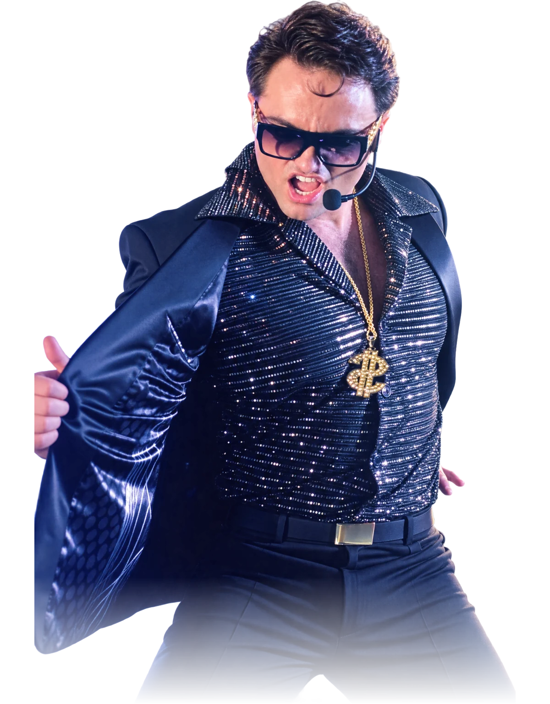
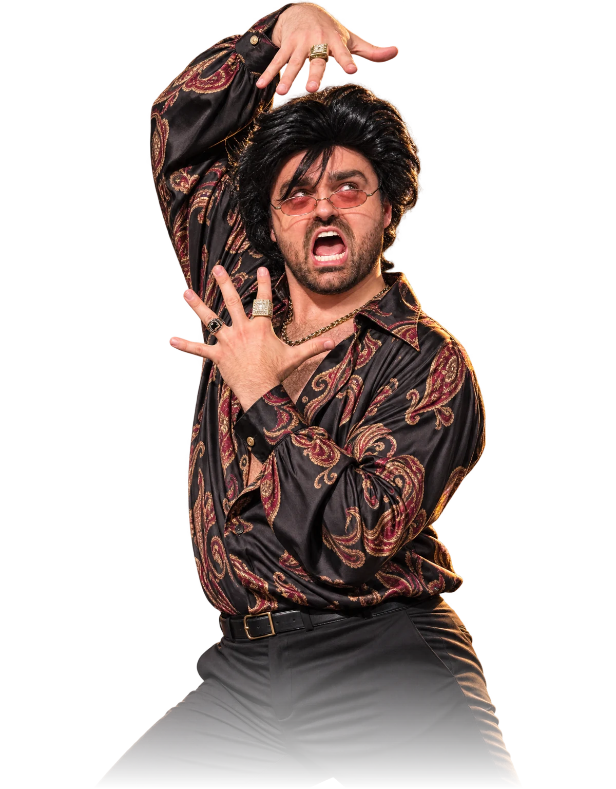

Chanteur crooner
Ambiance feutrée pour un cocktail, un 5 à 7 ou un souper : standards intemporels, chanson française et classiques québécois, livrés avec le sourire et le micro rétro.
En fond pendant qu'on jase, plus présent quand le plancher de danse s'ouvre.

Une chanson écrite pour eux
Un mariage, un anniversaire, un départ à la retraite, un party de bureau : une chanson personnalisée, écrite et interprétée sur mesure, à partir de ce que vous me racontez sur la personne.
1. Vous me racontez
Ses manies, ses expressions, l'anecdote que tout le monde connaît. Un court questionnaire suffit.
2. J'écris
Des paroles faites pour cette personne-là, avec les vrais détails dedans.
3. Je la chante devant tout le monde
Le moment de la soirée dont on reparle longtemps.
Les personnages
Pour une fête d'enfants, une soirée thématique ou juste pour surprendre : quelques-uns de ceux qui montent régulièrement sur scène.
- Capitaine Crochet
- Maître de cirque

Roi du disco
Le loufoque- DJ
 L'astronaute
L'astronaute

Party privé et roast
40e, 50e, retraite, enterrement de vie de garçon : en chanson ou en humour, je roast votre beau-frère devant ses amis. Tout part de vos anecdotes — rien d'inventé, rien de méchant, et vos invités vont s'en rappeler.
- Sur mesure — un questionnaire, et je bâtis le numéro avec vos vraies histoires.
- Clé en main — micro, son, musique : j'arrive avec tout.
- Bienveillant — on rit avec la personne, jamais contre elle.
On en parle?
Dites-moi l'occasion, la date et pour qui c'est. Je vous reviens vite avec une proposition simple.
Écrire à Dominic